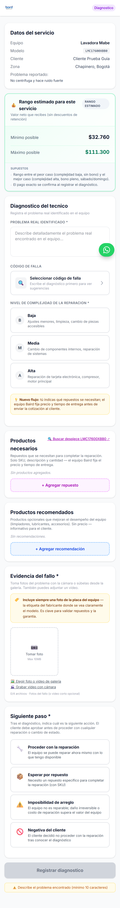
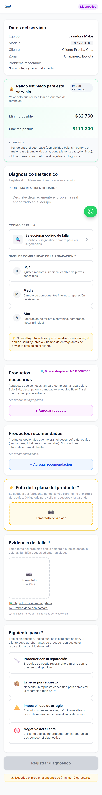
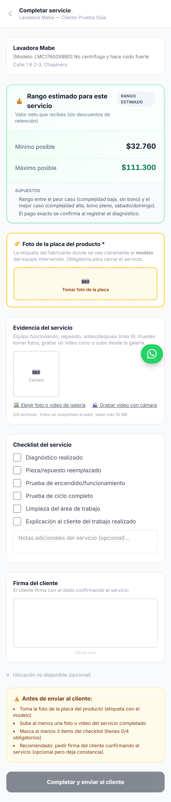
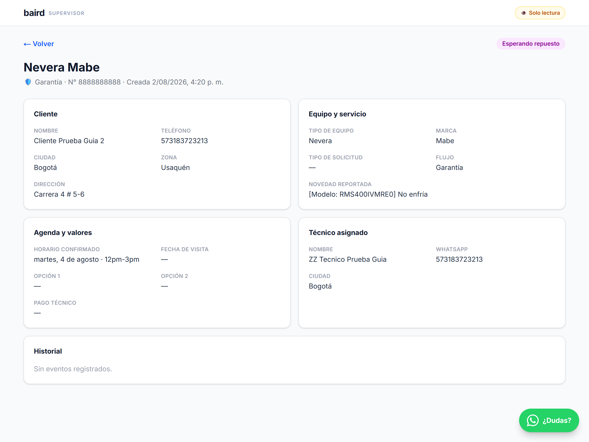
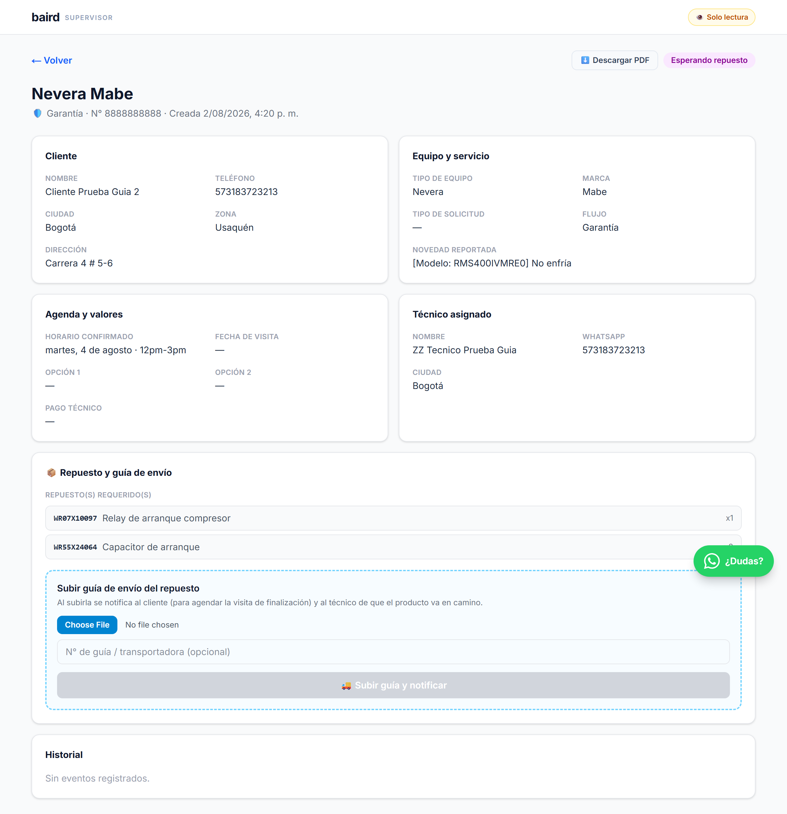

1Resumen — qué cambió
- El pedido de repuesto en garantía ya no espera aprobaciones: al registrar el diagnóstico, el servicio queda de inmediato en Esperando repuesto y el supervisor de la marca recibe el requerimiento exacto (SKU, descripción y cantidad) al instante. Se eliminó el paso de "tiempo de entrega".
- Nuevo estado Repuesto en camino: el supervisor sube la guía de envío desde su portal y el sistema avisa automáticamente al cliente (para que agende la visita de finalización) y al técnico.
- El agendamiento de la visita de finalización queda registrado en el sistema (agenda y calendario), igual que el agendamiento inicial del diagnóstico.
- Foto de la placa del producto obligatoria: ahora es una entrada propia del formulario, tanto en el diagnóstico como al completar el servicio.
- Portal del supervisor con PDF: el listado y la ficha de cada servicio se pueden descargar en PDF.
2Para TÉCNICOS 🔧
🏷️ Foto de la placa del producto — ahora obligatoria y con su propia sección
Antes la placa era solo un recordatorio dentro de las evidencias. Ahora el formulario de diagnóstico tiene una sección propia "Foto de la placa del producto" y no podrás enviar el diagnóstico sin ella. La placa (etiqueta del fabricante con el modelo) es la que permite validar repuestos y la garantía.


Formulario de diagnóstico: a la derecha, la nueva sección obligatoria "🏷️ Foto de la placa del producto *".
Lo mismo aplica al completar el servicio: hay una entrada dedicada para la placa del equipo intervenido antes de poder cerrar.


📦 Repuestos en garantía: más rápido y sin pasos intermedios
- Al registrar tu diagnóstico con "Esperar repuesto" (SKU obligatorio, igual que siempre), el servicio pasa directo a Esperando repuesto. Ya no hay espera de "tiempo de entrega" ni aprobación previa del cliente.
- Recibes de una vez por WhatsApp los datos de gestión (No. de garantía, SKU y dirección del cliente).
- Cuando el supervisor de la marca despache el repuesto, te llega el aviso "repuesto en camino" con el número de guía.
- El cliente agenda la visita de finalización y te llega la fecha tentativa para que la confirmes — como siempre, la confirmas según tu disponibilidad.
- El servicio nunca desaparece de tu portal: lo verás en "En proceso" con los estados Esperando repuesto, Repuesto en camino o Repuesto recibido según avance.
3Para SUPERVISORES 🛡️
📩 Requerimiento del repuesto exacto, al instante
En cuanto el técnico registra el diagnóstico con repuesto, recibes por WhatsApp el requerimiento completo: SKU × cantidad (descripción), modelo del equipo, No. de garantía, dirección de despacho y el diagnóstico del técnico. Sin esperas ni pasos intermedios del equipo Baird.
🚚 Nuevo en tu portal: subir la guía de envío
Cuando despaches el repuesto, entra al servicio en tu portal y usa la nueva sección "📦 Repuesto y guía de envío": adjunta la guía (foto o PDF) y el número de guía. Al subirla, el sistema hace todo lo demás:
- El servicio pasa a Repuesto en camino.
- El cliente recibe el aviso con botón para agendar la visita de finalización (queda registrada en el sistema).
- El técnico recibe el aviso de que el producto va en camino.


Detalle de un servicio esperando repuesto en el portal del supervisor: a la derecha, el requerimiento del repuesto y el cargue de la guía.
⬇️ Descarga en PDF
El listado de servicios y la ficha de cada servicio ahora tienen botón "Descargar PDF" — útil para reportar a la marca o archivar.
4Qué NO cambió
- El flujo particular (sin garantía) sigue igual: cotización al cliente y aprobación antes de proceder.
- Los pagos, tarifas y bonos no cambian con esta actualización.
- El agendamiento inicial del diagnóstico y el protocolo de visita siguen igual.
- El camino alterno donde el equipo Baird marca el repuesto como recibido sigue disponible.